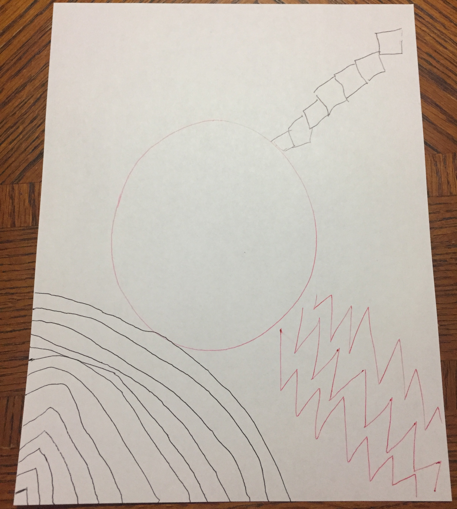

Lilliana Checo
Creative Computing
Conditional Design
Initial Rules
Draw a pattern in one corner of the page, opposite of the other player for 30 seconds
From a corner drawn by the other player, trace any type of line to connect your corner with theirs
Modified Rules
Draw a circle in the center
From the four corners of the paper, all players will draw a pattern until it touches the circle yet not coloring in it
Images
Initial

Modified

A Body of Knowledge